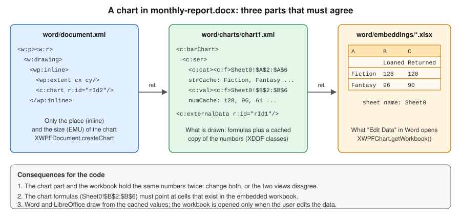

Word Charts & Embedded Objects
|
This content was generated with the assistance of AI and should be verified against the official documentation before being relied on in production. |
Baseline date: 2026-10-09. This page was written against Apache POI 5.5.1 (the latest release on that date; the 6.0 line
is in development and has not been released), Java 21 and later, Spring Boot 4.x on Spring Framework 7 and Jakarta EE 11.
It covers the two kinds of non-text content of a .docx file that are neither a table nor a picture: charts and
embedded objects. A chart in a Word report is a small drawing part that points to a small spreadsheet stored inside the
same file. An embedded object is a whole foreign document, such as an Excel workbook, stored inside the .docx and shown
as an icon or a preview. Both are described by the relationships of the package, the mechanism explained in
File Formats: OOXML & OLE2.
The examples belong to the Bookshelf scenario described in the section landing
page: the monthly-report.docx gets a column chart of loans and returns per genre, and a loan-letter.docx carries the
loan history of the reader as an embedded workbook. The document model (paragraphs, runs and the body) is explained in
Word Documents with XWPF, tables and pictures in
Word Tables, Lists & Images, headers, footers and fields in
Word Headers, Footers, Sections & Fields, and
replacing text in an existing document in
Word Templates & Placeholder Replacement. The same
chart classes draw charts in Excel; that use is the subject of
Images, Charts, Comments & Hyperlinks.
Charts in Word are the least documented part of POI. The Apache POI website has no XDDF chart guide: the
XWPF Quick Guide has no chart section, and the
chart classes are described only by their Javadoc and by two programs in the poi-examples module, ChartFromScratch and
BarChartExample, plus UpdateEmbeddedDoc for embedded workbooks. Every snippet on this page is derived from those
programs and from the Javadoc, adapted to the Bookshelf data, and was compiled and run against POI 5.5.1. Where the page
describes behaviour that the Javadoc does not state, it says that it was observed in 5.5.1.
How a chart is stored in a .docx
A chart is not a picture. Word stores it as three cooperating pieces, which the figure below shows for
monthly-report.docx:

| Part | Content | POI class |
|---|---|---|
|
A |
|
|
The chart itself in the DrawingML chart schema: plot type, axes, series, title, legend. Each series stores a formula
( |
|
|
A complete |
|
A chart that is drawn needs only the chart part and its cache; the embedded workbook is needed so that the user can edit the data afterwards. POI keeps the three pieces consistent when it creates a chart through the data source factory (see Series and data sources), and leaves it to you when you edit the workbook by hand (see Editing the workbook of a chart). The chart is inline: it sits in a run, flows with the text like a picture and cannot be positioned at absolute coordinates. POI 5.5.1 has no high-level method that creates a floating (anchored) chart.
What POI provides and what it does not
| Task | Support in POI 5.5.1 |
|---|---|
Create a chart in a new or existing |
Yes: |
Plot types |
Through |
Titles, legend, axes, series colours, number formats, gap width |
Yes, through the XDDF classes; the options are a subset of what Word offers |
Read the series and values of a chart in an existing document |
Yes: |
Replace the data of a chart in a template |
Yes, with |
Edit the embedded workbook of a chart |
Yes: |
Embed an |
No high-level API: the package part, the relationship and the |
List and update embedded workbooks |
Partly: |
Floating charts, text wrapping around a chart |
No high-level API |
Render a chart as an image or in a PDF |
No. POI never renders; see the options at the end of this page |
A chart guide, |
No. Only Javadoc and the official examples describe the classes |
The XDDF API (XML Drawing Document Format) wraps the chart beans of org.openxmlformats.schemas.drawingml.x2006.chart.
Anything that XDDF does not wrap is reached with chart.getCTChart() or chart.getCTChartSpace(), which return the raw
XMLBeans objects. The usual caution applies: the beans are generated from the ECMA-376 schema, they do not protect you
from producing a chart that Word refuses to open, and some of them live only in the poi-ooxml-full jar (see
Setup & Dependencies).
Dependencies
Charts need poi-ooxml only. It brings poi-ooxml-lite, which contains the chart classes used on this page; all the examples
below were compiled and run against the lite jar.
<dependency>
<groupId>org.apache.poi</groupId>
<artifactId>poi-ooxml</artifactId>
<version>5.5.1</version>
</dependency>dependencies {
implementation("org.apache.poi:poi-ooxml:5.5.1")
}Source: Apache POI components overview.
Creating a chart
The three createChart methods
XWPFDocument has three methods that add a chart and return an XWPFChart. All of them create the chart part and its
relationship and insert an inline drawing. The embedded workbook is added to the package when the chart has data: a document
that only called createChart() twice, in a check for this page, contained two chart parts and no workbook.
| Method | Behaviour |
|---|---|
|
Appends a new paragraph at the end of the body and puts the chart in it, with the default size |
|
The same, with the size in EMU |
|
Puts the chart in a run that you created, so the chart goes exactly where that paragraph is, even in the middle of the document |
The default size, XWPFChart.DEFAULT_WIDTH and DEFAULT_HEIGHT, is 500,000 EMU, about 1.4 cm: it is a placeholder, not a
useful size. Pass your own. Sizes are in EMU (English Metric Units): 914,400 per inch, 360,000 per centimetre, 12,700 per
point and 9,525 per pixel at 96 dpi. org.apache.poi.util.Units.toEMU(double points) converts points. A text column of an
A4 page with 2.5 cm margins is about 453 points wide, so the 440 by 260 points used below fills most of it.
A column chart from scratch
The example creates monthly-report.docx: a title, an introduction, the chart of loans and returns per genre, and a
caption. The chart is placed with the third form of createChart, so the order of the four paragraphs is the order of the
code. The rest follows the steps of ChartFromScratch in poi-examples.
package bookshelf;
import java.io.FileOutputStream;
import java.io.IOException;
import org.apache.poi.openxml4j.exceptions.InvalidFormatException;
import org.apache.poi.ss.util.CellRangeAddress;
import org.apache.poi.util.Units;
import org.apache.poi.xddf.usermodel.chart.AxisCrossBetween;
import org.apache.poi.xddf.usermodel.chart.AxisCrosses;
import org.apache.poi.xddf.usermodel.chart.AxisPosition;
import org.apache.poi.xddf.usermodel.chart.BarDirection;
import org.apache.poi.xddf.usermodel.chart.BarGrouping;
import org.apache.poi.xddf.usermodel.chart.ChartTypes;
import org.apache.poi.xddf.usermodel.chart.LegendPosition;
import org.apache.poi.xddf.usermodel.chart.XDDFBarChartData;
import org.apache.poi.xddf.usermodel.chart.XDDFCategoryAxis;
import org.apache.poi.xddf.usermodel.chart.XDDFDataSource;
import org.apache.poi.xddf.usermodel.chart.XDDFDataSourcesFactory;
import org.apache.poi.xddf.usermodel.chart.XDDFNumericalDataSource;
import org.apache.poi.xddf.usermodel.chart.XDDFValueAxis;
import org.apache.poi.xwpf.usermodel.XWPFChart;
import org.apache.poi.xwpf.usermodel.XWPFDocument;
import org.apache.poi.xwpf.usermodel.XWPFParagraph;
import org.apache.poi.xwpf.usermodel.XWPFRun;
public final class MonthlyReportChart {
private static final int GENRE_COLUMN = 0;
private static final int LOANED_COLUMN = 1;
private static final int RETURNED_COLUMN = 2;
public static void main(String[] args) throws IOException, InvalidFormatException {
String[] genres = {"Fiction", "Fantasy", "Science", "Technology", "History"};
Double[] loaned = {128.0, 96.0, 61.0, 74.0, 43.0};
Double[] returned = {120.0, 90.0, 58.0, 69.0, 45.0};
try (XWPFDocument document = new XWPFDocument();
FileOutputStream out = new FileOutputStream("monthly-report.docx")) {
XWPFParagraph title = document.createParagraph();
XWPFRun titleRun = title.createRun();
titleRun.setBold(true);
titleRun.setFontSize(18);
titleRun.setText("Monthly loans report, September 2026");
XWPFParagraph intro = document.createParagraph();
intro.createRun().setText("Loans and returns per genre are compared in the chart below.");
// The chart is anchored inline in a run of its own paragraph.
XWPFParagraph chartParagraph = document.createParagraph();
XWPFRun chartRun = chartParagraph.createRun();
XWPFChart chart = document.createChart(chartRun,
(int) Units.toEMU(440), (int) Units.toEMU(260));
XDDFCategoryAxis genreAxis = chart.createCategoryAxis(AxisPosition.BOTTOM);
genreAxis.setTitle("Genre");
XDDFValueAxis countAxis = chart.createValueAxis(AxisPosition.LEFT);
countAxis.setTitle("Books");
countAxis.setCrosses(AxisCrosses.AUTO_ZERO);
countAxis.setCrossBetween(AxisCrossBetween.BETWEEN);
int points = genres.length;
// Sheet1 of the embedded workbook: A = genre, B = loaned, C = returned; row 1 holds the series titles.
XDDFDataSource<String> categories = XDDFDataSourcesFactory.fromArray(
genres, chart.formatRange(new CellRangeAddress(1, points, GENRE_COLUMN, GENRE_COLUMN)), GENRE_COLUMN);
XDDFNumericalDataSource<Double> loanedValues = XDDFDataSourcesFactory.fromArray(
loaned, chart.formatRange(new CellRangeAddress(1, points, LOANED_COLUMN, LOANED_COLUMN)), LOANED_COLUMN);
XDDFNumericalDataSource<Double> returnedValues = XDDFDataSourcesFactory.fromArray(
returned, chart.formatRange(new CellRangeAddress(1, points, RETURNED_COLUMN, RETURNED_COLUMN)), RETURNED_COLUMN);
XDDFBarChartData data = (XDDFBarChartData) chart.createData(ChartTypes.BAR, genreAxis, countAxis);
data.setBarDirection(BarDirection.COL);
data.setBarGrouping(BarGrouping.CLUSTERED);
XDDFBarChartData.Series loanedSeries = (XDDFBarChartData.Series) data.addSeries(categories, loanedValues);
loanedSeries.setTitle("Loaned", chart.setSheetTitle("Loaned", LOANED_COLUMN));
XDDFBarChartData.Series returnedSeries = (XDDFBarChartData.Series) data.addSeries(categories, returnedValues);
returnedSeries.setTitle("Returned", chart.setSheetTitle("Returned", RETURNED_COLUMN));
chart.plot(data);
chart.getOrAddLegend().setPosition(LegendPosition.BOTTOM);
chart.setTitleText("Loans and returns by genre");
chart.setTitleOverlay(false);
XWPFParagraph caption = document.createParagraph();
caption.createRun().setText("Figure 1. Loans and returns by genre, September 2026.");
document.write(out);
}
}
}Source: ChartFromScratch in
poi-examples
(package org.apache.poi.examples.xwpf.usermodel), and the Javadoc of
XWPFChart and
XDDFChart.
The order of the calls matters. It is the same for every plot type:
run, width, height"] --> B["Axes
createCategoryAxis
createValueAxis"] B --> C["Data sources
XDDFDataSourcesFactory.fromArray"] C --> D["chart.createData
ChartTypes + axes"] D --> E["data.addSeries
series.setTitle"] E --> F["chart.plot data"] F --> G["title, legend,
colours"] G --> H["document.write"]
Remarks on the code:
-
createChart(chartRun, ...)returns a chart that is empty. Nothing is drawn untilchart.plot(data)is called, andplotmust be called after the series have been added. Calling it twice with the same data duplicates the plot. -
The axes are created before the data and are passed to
createData. A pie or doughnut chart has no axes and passesnullfor both. -
BarDirection.COLdraws vertical columns andBarDirection.BARhorizontal bars;BarGroupingselects clustered, stacked or percent-stacked. -
chart.setTitleOverlay(false)keeps the title above the plot area instead of over it. The language attribute that POI writes on the title text comes from the default locale of the JVM (a machine with a Spanish locale producedes-ES), so a server that renders reports for several languages should not rely on it for spell-checking or hyphenation. -
The caption paragraph is an ordinary paragraph. A caption that Word can list with Insert Table of Figures is a
SEQfield; see Word Headers, Footers, Sections & Fields. -
The document of the example has no
styles.xml, becausenew XWPFDocument()creates none. The title is therefore formatted with run properties instead of theHeading1style, which would be silently ignored. Styles are explained in Word Documents with XWPF.
Sizes, margins and the bounding box
The size of a chart can be changed after creation with setChartWidth(long), setChartHeight(long) and
setChartBoundingBox(long, long), all in EMU. The distance between the chart and the surrounding text is set with
setChartTopMargin, setChartBottomMargin, setChartLeftMargin and setChartRightMargin, or with
setChartMargin(long, long, long, long) for the four at once. The getters getChartWidth() and getChartHeight() read the
size back; the margin getters take a long argument in the signature of 5.5.1 that the Javadoc does not explain, so keep
your own copy of the margins you need to read.
Source: Javadoc of XWPFChart.
Plot types, axes and styling
chart.createData(ChartTypes, XDDFChartAxis, XDDFValueAxis) returns a data object of the type that matches the constant.
The cast is part of the API:
ChartTypes |
Data class and series class | Axes |
|---|---|---|
|
|
Category and value |
|
|
Category and value |
|
|
Category and value |
|
|
None (pass |
|
|
Two value axes |
|
|
Category and value |
|
|
Category, value and series |
A chart can hold several plots, for example columns and a line, by calling createData and plot once for each plot with
shared axes. In 5.5.1 this is possible but not documented, and the official examples never combine plots, so test the
resulting file in Word.
A pie chart of the stock
A pie chart shows how one series divides a total. The snippet creates genre-share.docx with the copies in stock of the
Bookshelf per genre (the imports are those of the previous example plus XDDFPieChartData and XDDFChartData). The chart
is appended with createChart(int, int):
try (XWPFDocument document = new XWPFDocument();
FileOutputStream out = new FileOutputStream("genre-share.docx")) {
// createChart(width, height) appends a new paragraph at the end of the body.
XWPFChart chart = document.createChart((int) Units.toEMU(360), (int) Units.toEMU(260));
XDDFDataSource<String> categories = XDDFDataSourcesFactory.fromArray(
genres, chart.formatRange(new CellRangeAddress(1, genres.length, 0, 0)), 0);
XDDFNumericalDataSource<Double> values = XDDFDataSourcesFactory.fromArray(
copies, chart.formatRange(new CellRangeAddress(1, genres.length, 1, 1)), 1);
// A pie chart has no axes: pass null for both.
XDDFPieChartData data = (XDDFPieChartData) chart.createData(ChartTypes.PIE, null, null);
data.setVaryColors(true);
XDDFChartData.Series series = data.addSeries(categories, values);
series.setTitle("Copies", chart.setSheetTitle("Copies", 1));
chart.plot(data);
chart.getOrAddLegend().setPosition(LegendPosition.RIGHT);
chart.setTitleText("Copies in stock by genre");
chart.setTitleOverlay(false);
document.write(out);
}Source: Javadoc of
XDDFPieChartData, and the
structure of ChartFromScratch in
poi-examples.
setVaryColors(true) gives every slice its own colour. Without it a pie chart has one colour for all its slices.
Colours, gap width and the value axis
XDDF exposes the common styling options as small objects. The snippet below, applied to the chart of monthly-report.docx,
colours the two series, narrows the gap between column groups and fixes the scale of the value axis:
XWPFChart chart = document.getCharts().get(0);
XDDFBarChartData bar = (XDDFBarChartData) chart.getChartSeries().get(0);
// Series colours: a hexadecimal RGB colour and a preset colour.
bar.getSeries(0).setFillProperties(new XDDFSolidFillProperties(
XDDFColor.from(new byte[] {(byte) 0x1F, (byte) 0x5F, (byte) 0xA6})));
bar.getSeries(1).setFillProperties(new XDDFSolidFillProperties(
XDDFColor.from(PresetColor.ORANGE)));
bar.setGapWidth(80); // percent of a column width between two groups
XDDFValueAxis valueAxis = bar.getValueAxes().get(0);
valueAxis.setMinimum(0);
valueAxis.setMaximum(150);
valueAxis.setMajorUnit(25);
valueAxis.setNumberFormat("0");
chart.plot(bar); // apply the changes to the chart partSource: Javadoc of XDDFValueAxis,
XDDFSolidFillProperties and
XDDFBarChartData.
All of these options exist in the Excel use of the same classes; the page
Images, Charts, Comments & Hyperlinks lists the
XDDFChartLegend, axis and series options in more detail. Fonts of titles and labels are set through
XDDFRunProperties (chart.getTitle().getOrAddTextProperties()) and the XDDFTextBody of getFormattedTitle().
Series and data sources
A series is a pair of data sources: the categories (the labels of the x axis, XDDFDataSource<String>) and the values
(XDDFNumericalDataSource<Double>). XDDFDataSourcesFactory creates them in two ways:
| Factory method | Use |
|---|---|
|
The data come from a Java array. The range and the column say where in the embedded workbook the values are written and which formula the chart stores. This is the form used in Word |
|
The data are literal: the series has no cell range, so there is no sheet range that Edit Data in Word could change |
|
The data are read from the cells of an existing |
In Word, the arrays are the data. When the chart is saved, POI writes them into the embedded workbook at the positions that the ranges describe, so the formula in the chart and the cells of the workbook agree. Three helpers produce the pieces:
-
chart.formatRange(new CellRangeAddress(1, points, column, column))returns the formula text of a range, for exampleSheet0!$B$2:$B$6. The first row (index 0) is left for the series title; the data start at row index 1. -
chart.setSheetTitle("Loaned", column)writes the title of the series into row 0 of that column of the embedded workbook and returns theCellReferencethatseries.setTitle(String, CellReference)stores in the chart. -
The
columnargument offromArraymust be the column that the range names, because it is the column that POI fills.
The embedded sheet of a chart created by POI is named Sheet0. The name appears in every formula, and the workbook of
the example contains exactly one sheet with that name, in the layout shown in the figure: categories in column A, titles in
row 1 of columns B and C. If you rename the sheet through getWorkbook() you must also update the formulas, or the chart
loses its data when the user opens Edit Data.
Categories are shared by the series of a chart, but every series needs a data source object of its own for its values.
Use the same categories object for all series, as the example does, so that they point at the same cells.
Source: ChartFromScratch and BarChartExample in
poi-examples,
and the Javadoc of
XDDFDataSourcesFactory.
Reading the charts of an existing document
XWPFDocument.getCharts() returns every chart of the document, in the order of the package, which is the order in which the
charts were created and not necessarily the order on the page. Each chart exposes its plots with getChartSeries(), and
each plot its series. This reads the charts of the monthly-report.docx created above:
package bookshelf;
import java.io.File;
import java.io.IOException;
import org.apache.poi.openxml4j.exceptions.InvalidFormatException;
import org.apache.poi.openxml4j.opc.OPCPackage;
import org.apache.poi.openxml4j.opc.PackageAccess;
import org.apache.poi.xddf.usermodel.chart.XDDFChartData;
import org.apache.poi.xddf.usermodel.chart.XDDFDataSource;
import org.apache.poi.xddf.usermodel.chart.XDDFNumericalDataSource;
import org.apache.poi.xwpf.usermodel.XWPFChart;
import org.apache.poi.xwpf.usermodel.XWPFDocument;
public final class ReadReportCharts {
public static void main(String[] args) throws IOException, InvalidFormatException {
try (OPCPackage pkg = OPCPackage.open(new File("monthly-report.docx"), PackageAccess.READ);
XWPFDocument document = new XWPFDocument(pkg)) {
int number = 0;
for (XWPFChart chart : document.getCharts()) {
System.out.printf("Chart %d: %s%n", ++number, chart.getTitle() == null
? "(no title)" : chart.getTitle().getBody().getParagraph(0).getText());
for (XDDFChartData plot : chart.getChartSeries()) {
System.out.printf(" plot type: %s%n", plot.getClass().getSimpleName());
for (int i = 0; i < plot.getSeriesCount(); i++) {
XDDFChartData.Series series = plot.getSeries(i);
XDDFDataSource<?> categories = series.getCategoryData();
XDDFNumericalDataSource<? extends Number> values = series.getValuesData();
System.out.printf(" series %d: categories %s, values %s%n",
i, categories.getDataRangeReference(), values.getDataRangeReference());
for (int p = 0; p < values.getPointCount(); p++) {
System.out.printf(" %s = %s%n", categories.getPointAt(p), values.getPointAt(p));
}
}
}
}
}
}
}The program prints:
Chart 1: Loans and returns by genre
plot type: XDDFBarChartData
series 0: categories Sheet0!$A$2:$A$6, values Sheet0!$B$2:$B$6
Fiction = 128.0
Fantasy = 96.0
Science = 61.0
Technology = 74.0
History = 43.0
series 1: categories Sheet0!$A$2:$A$6, values Sheet0!$C$2:$C$6
Fiction = 120.0
Fantasy = 90.0
Science = 58.0
Technology = 69.0
History = 45.0Source: Javadoc of XWPFDocument and
XDDFChartData.
The values come from the cache stored in the chart part. They are what Word draws, but they are not guaranteed to equal the cells of the embedded workbook if another program changed only one of the two. When the numbers matter, read the workbook (see below) and compare.
The chart is opened here with OPCPackage.open(File, PackageAccess.READ), which is the right choice for a read-only
inspection: the package cannot be saved by accident. A document opened that way rejects write, as the next section shows.
Refreshing the chart of a report template
The common server task is a monthly report: a template .docx contains a chart with the layout, colours and title
styles that the design team approved, and the application replaces the numbers. This is the case of BarChartExample. The
chart of the previous example serves as the template, and the October report has one more genre:
package bookshelf;
import java.io.FileOutputStream;
import java.io.IOException;
import java.io.InputStream;
import java.nio.file.Files;
import java.nio.file.Path;
import org.apache.poi.ss.util.CellRangeAddress;
import org.apache.poi.xddf.usermodel.chart.XDDFBarChartData;
import org.apache.poi.xddf.usermodel.chart.XDDFChartData;
import org.apache.poi.xddf.usermodel.chart.XDDFDataSource;
import org.apache.poi.xddf.usermodel.chart.XDDFDataSourcesFactory;
import org.apache.poi.xddf.usermodel.chart.XDDFNumericalDataSource;
import org.apache.poi.xwpf.usermodel.XWPFChart;
import org.apache.poi.xwpf.usermodel.XWPFDocument;
public final class RefreshReportChart {
public static void main(String[] args) throws IOException {
String[] genres = {"Fiction", "Fantasy", "Science", "Technology", "History", "Comics"};
Double[] loaned = {131.0, 99.0, 64.0, 80.0, 40.0, 52.0};
Double[] returned = {126.0, 93.0, 60.0, 71.0, 44.0, 49.0};
try (InputStream in = Files.newInputStream(Path.of("monthly-report.docx"));
XWPFDocument document = new XWPFDocument(in);
FileOutputStream out = new FileOutputStream("monthly-report-october.docx")) {
XWPFChart chart = document.getCharts().get(0);
XDDFBarChartData bar = (XDDFBarChartData) chart.getChartSeries().get(0);
int points = genres.length;
String categoryRange = chart.formatRange(new CellRangeAddress(1, points, 0, 0));
XDDFDataSource<String> categories = XDDFDataSourcesFactory.fromArray(genres, categoryRange, 0);
// The same categories are shared by both series; each series gets its own value column.
Double[][] columns = {loaned, returned};
String[] titles = {"Loaned", "Returned"};
for (int s = 0; s < columns.length; s++) {
int column = s + 1;
String valueRange = chart.formatRange(new CellRangeAddress(1, points, column, column));
XDDFNumericalDataSource<Double> values =
XDDFDataSourcesFactory.fromArray(columns[s], valueRange, column);
XDDFChartData.Series series = bar.getSeries(s);
series.replaceData(categories, values);
series.setTitle(titles[s], chart.setSheetTitle(titles[s], column));
}
chart.plot(bar);
chart.setTitleText("Loans and returns by genre, October 2026");
chart.setTitleOverlay(false);
document.write(out);
}
}
}Source: BarChartExample in
poi-examples,
and the Javadoc of
XDDFChartData.Series.
In a check made for this page the result contained six categories in the chart part, formulas that end in $7, and an
embedded workbook with six data rows, without any explicit call that touches the workbook: replaceData and plot are
enough, and the workbook is written when the document is saved. The colours, gap width and title formatting of the template
were kept, because only the data were replaced.
Remarks:
-
The template is read through a
Files.newInputStreamand written to a different stream. A document opened from aFilepath withPackageAccess.READ_WRITEwrites itself back to the same file when it is closed, which overwrites the template of a server that serves it to many users. A document opened withPackageAccess.READrefuses to be written; in the check for this pagedocument.write(out)threwInvalidOperationException: Operation not allowed, document open in read only mode!. The stream form copies the template into memory and is the safe one for templates; for very large templates keep a copy of the file per request. -
The template must contain the chart. POI cannot create "a chart like that one"; the design of the chart is the template’s design. A report with an unknown number of charts needs
createChartin code, or a template with the maximum number of charts and code that removes unused ones (removing a chart part is not supported by a high-level method). -
Category and value counts may differ from the template, as the sixth genre shows. The formulas are rewritten with the new size because the ranges are computed from
points. -
Text placeholders around the chart, such as the caption, are replaced with the technique of Word Templates & Placeholder Replacement.
Editing the workbook of a chart
XWPFChart.getWorkbook() returns the embedded workbook as an XSSFWorkbook. The whole spreadsheet API of the
Spreadsheet Usermodel Basics page applies to it. This is useful
when the user should find more than the plotted cells in Edit Data: a note about the source, a total with a formula, or a
second table that a later chart will use.
package bookshelf;
import java.io.FileOutputStream;
import java.io.IOException;
import java.io.InputStream;
import java.nio.file.Files;
import java.nio.file.Path;
import org.apache.poi.openxml4j.exceptions.InvalidFormatException;
import org.apache.poi.xssf.usermodel.XSSFSheet;
import org.apache.poi.xssf.usermodel.XSSFWorkbook;
import org.apache.poi.xwpf.usermodel.XWPFChart;
import org.apache.poi.xwpf.usermodel.XWPFDocument;
public final class EditChartWorkbook {
public static void main(String[] args) throws IOException, InvalidFormatException {
try (InputStream in = Files.newInputStream(Path.of("monthly-report.docx"));
XWPFDocument document = new XWPFDocument(in);
FileOutputStream out = new FileOutputStream("monthly-report-annotated.docx")) {
XWPFChart chart = document.getCharts().get(0);
// The workbook behind "Edit Data" in Word: an XSSFWorkbook parsed from word/embeddings/.
XSSFWorkbook workbook = chart.getWorkbook();
XSSFSheet sheet = workbook.getSheetAt(0);
// Add a note next to the chart data. The chart itself does not reference column E.
sheet.getRow(0).createCell(4).setCellValue("Source");
sheet.getRow(1).createCell(4).setCellValue("Loans database, 2026-09-30");
document.write(out);
}
}
}Source: UpdateEmbeddedDoc in
poi-examples,
and the Javadoc of
XDDFChart (getWorkbook,
saveWorkbook).
Observed behaviour in 5.5.1, worth knowing before you write similar code:
-
The workbook returned by
getWorkbook()is cached by the chart and written back into the embedded part when the document is saved. Do not callchart.saveWorkbook(workbook)as well. In the check for this page, callingsaveWorkbookand thendocument.writeleft two complete zip archives concatenated in the.xlsxpart (6,982 bytes instead of 3,491). POI itself still read the file, butunzipwarned about extra bytes, and a strict consumer of the embedded file may reject it. -
Use
getRow(i)and notcreateRow(i)for the rows that the chart reads.createRowon an existing row index replaces the row and its cells. -
The cells that the chart formulas name (here
B2:C6andA2:A6) must keep their data and positions. The note in column E is outside them, so the chart is unchanged. -
The cached values in the chart are not recalculated when you edit the workbook. If the plotted cells change, change the chart data too, with
replaceData, as in the previous section.
Embedded objects
An embedded object is a file stored inside the .docx, shown in the text by an icon or a preview image. Word creates them
with Insert, Object. The embedded file is one more part of the package, in word/embeddings/, and a w:object element
in a run ties the preview picture to it. Which program opens it is decided by the ProgID of the object (Excel.Sheet.12
for an .xlsx workbook).
| Kind of embedded object | Stored as | Content type |
|---|---|---|
Excel workbook ( |
|
|
Word document ( |
|
|
Binary Office file or other OLE object |
|
|
Chart workbook |
|
|
The last row is the cause of the most common surprise: XWPFDocument.getAllEmbeddedParts() lists the parts related to the
document part only. For monthly-report.docx, whose only embedded file belongs to a chart, the call returned an empty
list in the check for this page. The workbook of a chart is reached with XWPFChart.getWorkbook().
Embedding a workbook
POI has no method that embeds a file. The three steps are done on the package, followed by one low-level XML fragment. The
example attaches the loan history of a reader to loan-letter-with-data.docx:
package bookshelf;
import java.awt.Color;
import java.awt.Graphics2D;
import java.awt.image.BufferedImage;
import java.io.ByteArrayOutputStream;
import java.io.FileOutputStream;
import java.io.IOException;
import java.io.OutputStream;
import javax.imageio.ImageIO;
import org.apache.poi.openxml4j.exceptions.InvalidFormatException;
import org.apache.poi.openxml4j.opc.OPCPackage;
import org.apache.poi.openxml4j.opc.PackagePart;
import org.apache.poi.openxml4j.opc.PackagePartName;
import org.apache.poi.openxml4j.opc.PackageRelationship;
import org.apache.poi.openxml4j.opc.PackagingURIHelper;
import org.apache.poi.openxml4j.opc.TargetMode;
import org.apache.poi.ss.usermodel.Row;
import org.apache.poi.xssf.usermodel.XSSFSheet;
import org.apache.poi.xssf.usermodel.XSSFWorkbook;
import org.apache.poi.xwpf.usermodel.XWPFDocument;
import org.apache.poi.xwpf.usermodel.XWPFParagraph;
import org.apache.poi.xwpf.usermodel.XWPFRun;
import org.apache.xmlbeans.XmlException;
import org.openxmlformats.schemas.wordprocessingml.x2006.main.CTObject;
public final class EmbedWorkbook {
private static final String XLSX_TYPE =
"application/vnd.openxmlformats-officedocument.spreadsheetml.sheet";
private static final String PACKAGE_REL =
"http://schemas.openxmlformats.org/officeDocument/2006/relationships/package";
public static void main(String[] args) throws IOException, InvalidFormatException, XmlException {
try (XWPFDocument document = new XWPFDocument();
FileOutputStream out = new FileOutputStream("loan-letter-with-data.docx")) {
document.createParagraph().createRun().setText("The loan history of your account is attached as a workbook:");
// 1. The embedded workbook is a new part of the package, named like Word names it.
PackagePartName partName = PackagingURIHelper.createPartName(
"/word/embeddings/Microsoft_Excel_Worksheet1.xlsx");
OPCPackage pkg = document.getPackage();
PackagePart workbookPart = pkg.createPart(partName, XLSX_TYPE);
try (OutputStream partOut = workbookPart.getOutputStream()) {
partOut.write(loanHistoryWorkbook());
}
// 2. The document part points to it with a "package" relationship.
PackageRelationship relationship = document.getPackagePart()
.addRelationship(partName, TargetMode.INTERNAL, PACKAGE_REL);
// 3. The icon Word shows in place of the workbook is an ordinary picture part.
String iconId = document.addPictureData(icon(), org.apache.poi.common.usermodel.PictureType.PNG);
// 4. The run holds a w:object that ties the icon (VML) and the OLE object together.
XWPFParagraph paragraph = document.createParagraph();
XWPFRun run = paragraph.createRun();
CTObject object = run.getCTR().addNewObject();
object.set(CTObject.Factory.parse(objectXml(iconId, relationship.getId())));
document.write(out);
}
}
private static String objectXml(String iconRelationshipId, String workbookRelationshipId) {
return """
<xml-fragment xmlns:w="http://schemas.openxmlformats.org/wordprocessingml/2006/main"
xmlns:r="http://schemas.openxmlformats.org/officeDocument/2006/relationships"
xmlns:v="urn:schemas-microsoft-com:vml"
xmlns:o="urn:schemas-microsoft-com:office:office"
w:dxaOrig="1520" w:dyaOrig="960">
<v:shape id="_x0000_i1025" type="#_x0000_t75" style="width:76pt;height:48pt" o:ole="">
<v:imagedata r:id="%s" o:title=""/>
</v:shape>
<o:OLEObject Type="Embed" ProgID="Excel.Sheet.12" ShapeID="_x0000_i1025"
DrawAspect="Icon" ObjectID="_1" r:id="%s"/>
</xml-fragment>
""".formatted(iconRelationshipId, workbookRelationshipId);
}
private static byte[] loanHistoryWorkbook() throws IOException {
try (XSSFWorkbook workbook = new XSSFWorkbook();
ByteArrayOutputStream bytes = new ByteArrayOutputStream()) {
XSSFSheet sheet = workbook.createSheet("Loans");
Row header = sheet.createRow(0);
header.createCell(0).setCellValue("Title");
header.createCell(1).setCellValue("Loaned");
header.createCell(2).setCellValue("Due");
Row row = sheet.createRow(1);
row.createCell(0).setCellValue("The Left Hand of Darkness");
row.createCell(1).setCellValue("2026-09-02");
row.createCell(2).setCellValue("2026-09-23");
workbook.write(bytes);
return bytes.toByteArray();
}
}
private static byte[] icon() throws IOException {
BufferedImage image = new BufferedImage(76, 48, BufferedImage.TYPE_INT_ARGB);
Graphics2D g = image.createGraphics();
g.setColor(new Color(0x1D6F42));
g.fillRoundRect(0, 0, 76, 48, 8, 8);
g.setColor(Color.WHITE);
g.drawString("Loans.xlsx", 8, 28);
g.dispose();
try (ByteArrayOutputStream bytes = new ByteArrayOutputStream()) {
ImageIO.write(image, "png", bytes);
return bytes.toByteArray();
}
}
}Source: OPCPackage and PackagePart in the
org.apache.poi.openxml4j.opc Javadoc,
the w:object element of WordprocessingML in
ECMA-376, and the structure of Word’s own files.
The program was run and the result reopened with POI, which found one embedded part with the correct content type. The
file was not opened in Microsoft Word for this page, so treat the XML of objectXml as the structure that Word writes in
simplified form, and open the result in Word and in LibreOffice before relying on it. Word files normally also carry a
v:shapetype definition for #_x0000_t75 in the same w:object; if a particular Word version complains about the
simplified form, copy the complete w:object of a file saved by Word and replace only the relationship ids.
Notes on the code:
-
pkg.createPart(partName, contentType)creates a part with no content; the bytes are written to its output stream. The.xlsxextension is registered as a default content type automatically, so the[Content_Types].xmlentry appears at save time. -
addRelationship(partName, TargetMode.INTERNAL, type)returns thePackageRelationship, whosegetId()goes into ther:idofo:OLEObject. -
document.addPictureData(bytes, PictureType.PNG)returns the relationship id of the icon picture; the document keeps it inword/media/. The icon is a plain PNG here. Word replaces it with a rendering of the workbook when the user edits the object. -
The text block is parsed with
CTObject.Factory.parseand copied into the object of the run. The wrapper element isxml-fragment, the standard XMLBeans form for the content of an element without the element itself; parsing aw:objectroot and callingsetwould produce aw:objectinside aw:object. -
DrawAspect="Icon"shows an icon;Contentshows a preview of the sheet. Preview mode needs a picture of the sheet, which POI cannot produce. -
ShapeIDon the OLE object andidon the VML shape must match, and must be unique in the document when you embed several objects.
Listing and updating embedded workbooks
getAllEmbeddedParts() returns the embedded objects as PackagePart`s. The official `UpdateEmbeddedDoc example opens one,
changes a cell and writes it back. Its own Javadoc warns that the embedded workbook can end up corrupted when the part
is read and written in the same try block, because the output stream of a part discards the existing content. The version
below reads the part completely, closes the workbook and only then replaces the content:
package bookshelf;
import java.io.ByteArrayInputStream;
import java.io.ByteArrayOutputStream;
import java.io.FileOutputStream;
import java.io.IOException;
import java.io.InputStream;
import java.io.OutputStream;
import java.nio.file.Files;
import java.nio.file.Path;
import java.util.List;
import org.apache.poi.openxml4j.exceptions.OpenXML4JException;
import org.apache.poi.openxml4j.opc.PackagePart;
import org.apache.poi.ss.usermodel.Sheet;
import org.apache.poi.ss.usermodel.Workbook;
import org.apache.poi.ss.usermodel.WorkbookFactory;
import org.apache.poi.xwpf.usermodel.XWPFDocument;
public final class UpdateEmbeddedWorkbooks {
public static void main(String[] args) throws IOException, OpenXML4JException {
try (InputStream in = Files.newInputStream(Path.of("loan-letter-with-data.docx"));
XWPFDocument document = new XWPFDocument(in);
FileOutputStream out = new FileOutputStream("loan-letter-updated.docx")) {
List<PackagePart> embedded = document.getAllEmbeddedParts();
for (PackagePart part : embedded) {
String extension = part.getPartName().getExtension();
System.out.printf("%s (%s)%n", part.getPartName(), part.getContentType());
if (!"xlsx".equals(extension) && !"xls".equals(extension)) {
continue; // another kind of object: leave it untouched
}
// Read the whole part first, then replace it: the part's output stream
// discards the old content, so never read and write it at the same time.
byte[] updated;
try (InputStream partIn = part.getInputStream();
Workbook workbook = WorkbookFactory.create(partIn);
ByteArrayOutputStream bytes = new ByteArrayOutputStream()) {
Sheet sheet = workbook.getSheetAt(0);
sheet.getRow(1).getCell(2).setCellValue("2026-10-14"); // extended due date
workbook.write(bytes);
updated = bytes.toByteArray();
}
try (OutputStream partOut = part.getOutputStream()) {
partOut.write(updated);
}
}
document.write(out);
}
}
}Source: UpdateEmbeddedDoc in
poi-examples,
and the Javadoc of
XWPFDocument.getAllEmbeddedParts.
The program prints /word/embeddings/Microsoft_Excel_Worksheet1.xlsx (application/vnd.openxmlformats-officedocument.spreadsheetml.sheet)
and writes loan-letter-updated.docx, whose workbook has the new due date. After the update the cell holds a text
2026-10-14, as the original did; a date should be a real date cell with a style, as explained in
Dates, Numbers & DataFormatter.
WorkbookFactory.create(InputStream) is used because the embedded part may be .xls or .xlsx; the example filters on both
extensions. Parts of another kind (a .docx, an .bin OLE object) are skipped and stay as they were. To read an embedded
legacy OLE object, open the part with POIFSFileSystem; the OLE2 container is described in
File Formats: OOXML & OLE2.
Choosing an approach
shown graphically"] --> B{"Is a template
chart available?"} B -->|"yes, only data change"| C["getCharts + replaceData
keeps the design"] B -->|"no"| D{"Must the reader be able
to edit the data in Word?"} D -->|"yes"| E["createChart + XDDF
embedded workbook"] D -->|"no, a fixed figure"| F["Render the chart elsewhere
and add it as a picture"] A --> G{"Raw data must travel
with the report?"} G -->|"yes"| H["Embed an .xlsx
manual package work"] G -->|"no"| I["Table in the document"]
Rendering the chart outside POI and inserting a PNG or SVG-based picture (see
Word Tables, Lists & Images) is the right choice when the same
report is also converted to PDF, because a converter draws DrawingML charts with its own engine, and the result can differ from what Word shows. When the report is delivered as a .docx that people edit, a native chart is better: it
follows the document theme and can be edited.
Testing charts
A chart that POI writes is only useful if Word opens it, and no POI test can open Word. The checks that can run in a build are structural:
@Test
void monthlyReportContainsTheChartWithTwoSeries() throws Exception {
try (InputStream in = Files.newInputStream(Path.of("target/monthly-report.docx"));
XWPFDocument document = new XWPFDocument(in)) {
assertThat(document.getCharts()).hasSize(1);
XDDFBarChartData bar = (XDDFBarChartData) document.getCharts().get(0).getChartSeries().get(0);
assertThat(bar.getSeriesCount()).isEqualTo(2);
assertThat(bar.getSeries(0).getValuesData().getPointCount()).isEqualTo(5);
// The embedded workbook must agree with the cache of the chart.
XSSFSheet data = document.getCharts().get(0).getWorkbook().getSheetAt(0);
assertThat(data.getRow(1).getCell(1).getNumericCellValue())
.isEqualTo(bar.getSeries(0).getValuesData().getPointAt(0).doubleValue());
}
}Source: Javadoc of XWPFDocument; testing
in general is covered in the Testing Office Documents page of this section. Add at least one manual check per release of the
report: open a generated file in Word, choose Edit Data and confirm that the sheet opens and the chart reacts.
What POI does not provide
The table at the top of this page lists the gaps. The ones that matter most in a server: there is no chart guide (the
behaviour described here was verified by running code, not read from a manual), no way to render a chart (a generated
.docx has the cached data and no bitmap, so converting it to PDF needs an external program; see
PDF Generation for the alternatives), no method to remove or move a chart, no
method to embed files, and no stability promise for XDDF: releases have removed deprecated methods of it (the changes list
records the removal of XDDFChartData.getSeries()), so pin the POI version and run the structural tests above on every
upgrade.
Pitfalls
-
createChart(int, int)appends a paragraph at the end of the body; use the run form to place a chart in the middle of a document. -
A chart without
chart.plot(data)is an empty rectangle. A chart plotted twice shows two plots. -
A document opened from a
FilewithPackageAccess.READ_WRITEoverwrites that file onclose(); a template must be opened from a stream. -
getAllEmbeddedParts()does not return the workbooks of charts. -
The formulas of a chart point at a sheet name (
Sheet0) that must exist in the embedded workbook. -
Embedded objects from untrusted uploads are executable content for some applications. When you read an uploaded
.docxthat contains embedded files, treat them as untrusted data, never open them with an application, and apply the size and zip-bomb limits described on the security pages of this section.
Version notes
| Version | Relevant facts |
|---|---|
4.0.0 |
The changes list records "Share chart data implementation between XSLFChart, XSSFChart and XWPFChart through XDDF": the chart classes of Word, Excel and PowerPoint share one XDDF base |
5.x |
The API used on this page ( |
5.5.1 |
The latest release as of 2026-10-09 and the version of every example. A fix listed for the development line rejects
oversized |
6.0 (in development) |
Not released. It is announced to remove deprecated APIs, to need JDK 17 and to harden zip handling; check the release notes for the chart classes when it ships |
The changes list has the full history; check it for the version you use.
References
-
XWPF Quick Guide: https://poi.apache.org/components/document/quick-guide-xwpf.html
-
Document component overview: https://poi.apache.org/components/document/
-
Official examples (
ChartFromScratch,BarChartExample,UpdateEmbeddedDoc): https://github.com/apache/poi/tree/trunk/poi-examples/src/main/java/org/apache/poi/examples/xwpf/usermodel/ -
Javadoc: https://poi.apache.org/apidocs/dev/
-
Components overview: https://poi.apache.org/components/index.html
-
Changes: https://poi.apache.org/changes.html
-
Apache XMLBeans: https://xmlbeans.apache.org/
-
ECMA-376: https://ecma-international.org/publications-and-standards/standards/ecma-376/